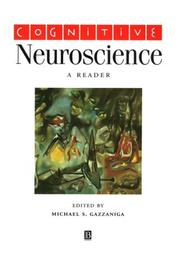

Cognitive Neuroscience: The Biology of the Mind
Book·Michael S. Gazzaniga, Richard B. Ivry, George R. Mangun, 1998·认知神经科学：关于心智的生物学

The standard textbook of the field, moving from nerve cells to attention, memory, language and consciousness.
- Author
- Michael S. Gazzaniga, Richard B. Ivry, George R. Mangun
- Year
- 1998
- Difficulty
- Intermediate
- Kind
- Overview
- Schools
- Cognitive Neuroscience
Editions
- Chinese edition 《认知神经科学》 Michael S. Gazzaniga / Richard B. Ivry / George R. Mangun / 迈克尔·加扎尼加 · tr. 周晓林 / 高定国 · 中国轻工业出版社 · 2011 Douban 9.2 (940 ratings) Douban page ↗
- English edition Cognitive Neuroscience: The Biology of the Mind Michael S. Gazzaniga, Richard B. Ivry, George R. Mangun · Fifth edition, W. W. Norton · 2019 Open Library ↗